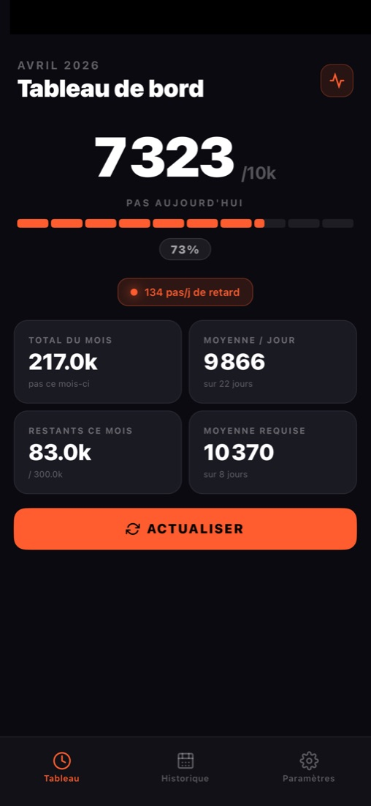
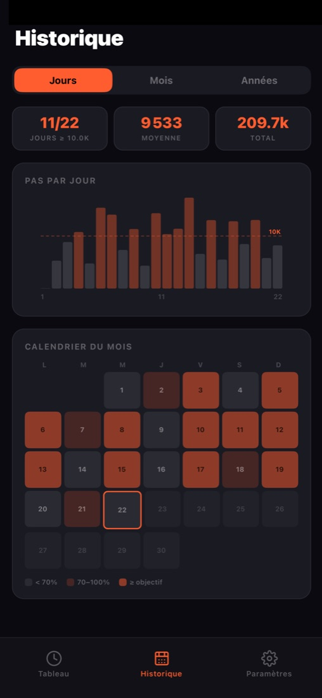
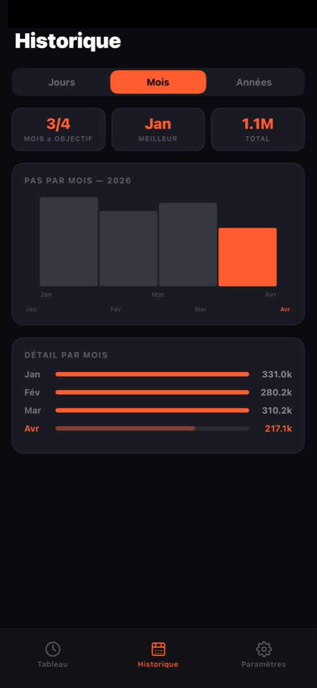
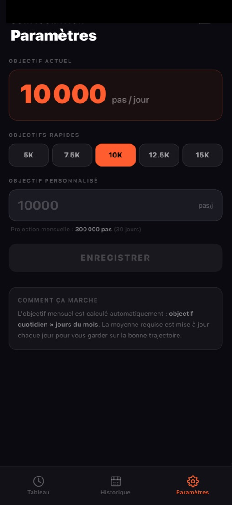

Tiens ton objectif de pas, jour après jour.
Tu marches déjà. Objectif 10K Pas te dit en un coup d'œil si tu es dans le rythme pour tenir ton objectif sur le mois et sur l'année.
Télécharger sur l'App StoreGratuit · Sans publicité · Aucune donnée collectée

Pensée pour le long terme
Un compteur de pas dit où tu en es aujourd'hui. 10K te dit si tu tiens la trajectoire.
Le rythme du mois
Ton total, ta moyenne par jour, les pas restants et la moyenne requise pour finir le mois à temps, avec ou sans aujourd'hui.
Ton avance ou ton retard
Une barre de progression avec le rythme idéal en repère, et un état clair : dans les temps, en avance ou en retard sur ton objectif.
Simple et respectueux
Lit directement l'app Santé, sans saisie. Aucune publicité, aucune donnée collectée : tes pas restent sur ton iPhone.
Un historique qui parle
Jour par jour, mois par mois, année par année. Touche une barre pour voir le total exact, le pourcentage de l'objectif et la moyenne quotidienne.



Questions fréquentes
L'application est-elle vraiment gratuite ?
Oui. Elle est gratuite, sans publicité et sans achat intégré.
Quelles données utilise-t-elle ?
Uniquement tes pas, lus dans l'app Santé d'Apple avec ton autorisation, en lecture seule. Ils ne quittent jamais ton iPhone et rien n'est collecté.
Puis-je changer mon objectif de 10 000 pas ?
Oui. Tu peux choisir un objectif rapide (de 5 000 à 15 000 pas) ou saisir le tien. L'objectif du mois se calcule tout seul.
Existe-t-elle sur Android ?
Pas pour l'instant : l'application est uniquement disponible sur iPhone.
En quelles langues est-elle disponible ?
En français et en anglais, selon la langue de ton iPhone.
Prêt à tenir ton rythme ?
Installe l'application et vois tout de suite où tu en es sur le mois.
Télécharger sur l'App Store